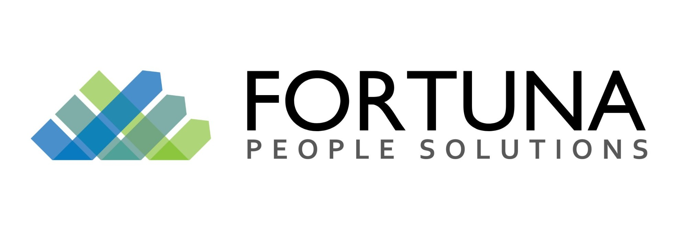
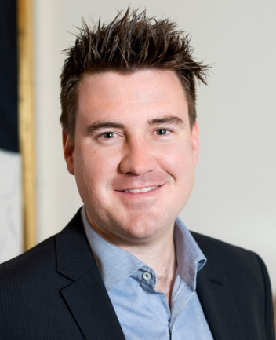

Welcome to the first edition of The Fortuna Update. Each quarter we'll cut through the noise on industrial relations, employee relations, award and Fair Work changes, and workplace health & safety, and translate it into what it actually means for your business. No jargon, no 40-page bulletins, just the practical, "here's what to check this quarter" version.
2026 has already been a big year for employers: a fresh Annual Wage Review decision, Payday Super landing on 1 July, growing enforcement of psychosocial safety obligations, and the first ever root-and-branch review of the National Employment Standards. This issue walks through what matters most for WA employers right now.
As always, if anything here raises a flag for your business, we're one call away.
The four biggest industrial and employee relations developments this quarter, and what they mean on the ground.
The Fair Work Commission also began a three-stage process to phase out the lowest award classification (C13), restructuring the bottom of the award pay scale. Worth tracking if your rates sit near that level.
Super guarantee contributions must now be paid at the same time as wages (weekly, fortnightly or monthly) rather than quarterly, and must land in the employee's fund within 7 business days of payday. A new "qualifying earnings" measure replaces ordinary time earnings, and funds must be able to receive contributions via the National Payments Platform. Missing the window can trigger ATO penalties and interest, even where unintentional.
The Government has launched the first comprehensive review of the NES since the Fair Work Act began. Alongside it, the Commission is examining regulated labour hire arrangements, and award flexibility (rostering, penalty rates) in hospitality and retail is under active review. None of this changes your obligations today, but it's the clearest signal yet that further reform is coming.
Regulated labour hire orders (requiring labour hire workers to be paid at least what the host's enterprise agreement would pay) are now well-established, with orders and matters under consideration worth more than $200 million nationally. If you host labour hire workers alongside an EA, this remains live.
Award underpayment remains one of the most common, and most expensive, risks we see in WA businesses. Here's what to check this quarter.
Confirm every classification under your award(s) reflects the 4.75% increase from the first full pay period on or after 1 July 2026, including allowances and penalty rates, which are often missed.
80+ modern awards now carry a casual conversion / "employee choice" pathway. Long-term regular casuals may trigger active obligations to respond to conversion requests.
With the FWC beginning to phase out the C13 classification, businesses using entry-level classifications should watch for flow-on structural changes in future reviews.
Hospitality and retail award flexibility is under active FWC review, with potential changes to penalty rates and rostering rules worth watching if these awards apply to you.
With award rates rising again this quarter and classification structures shifting, this is exactly the kind of exposure we see most often, and it's entirely preventable with a proactive review.
Three WHS developments worth putting on your radar this quarter, particularly for WA-based employers.
Psychosocial hazards (bullying, excessive workload, fatigue, poor workplace behaviour and emotional harm) are now a regulated, enforceable obligation in every Australian jurisdiction. PCBUs must actively identify, assess and eliminate (or minimise so far as reasonably practicable) these risks, not just respond after a complaint. Psychological injury claims already cost employers more than double the average physical injury claim, with materially longer recovery times and a higher likelihood of the employee leaving the workforce altogether.
WorkSafe WA is conducting its first five-yearly review of the Work Health and Safety Act 2020, alongside a national best-practice review of the model WHS laws being run by Safe Work Australia. Both reviews are expected to report in 2026, and we'll keep you posted on anything that changes obligations for WA employers.
New workplace exposure standards for hazardous chemicals take effect on 1 December 2026. If your business handles hazardous chemicals, dust or airborne contaminants, including in construction, resources, agriculture or facilities management, your safety documentation and monitoring should be reviewed well ahead of this date, not in the weeks before it lands.
The obligation to prevent sexual harassment before it happens is no longer theoretical. It's an active enforcement priority.
The Australian Human Rights Commission's power to investigate and enforce the positive duty to eliminate sexual harassment is now firmly in an enforcement phase: the Commission has confirmed six formal inquiries underway, a further 18 organisations being monitored, and roughly 140 complaints relating to potential non-compliance. A statutory review of the positive duty is also scheduled this year, which will include the AHRC publishing de-identified compliance and enforcement data, putting employer conduct under a brighter spotlight than ever before.
Ask yourself honestly: do you have an up-to-date sexual harassment & bullying policy, has it been trained into your team in the last 12 months, do managers know how to respond to an informal complaint, and could you produce a documented risk assessment if the AHRC asked tomorrow? If any answer is "no," that's where to start.
In our December edition, we'll cover the outcomes of the NES review submissions, any further Fair Work Commission award flexibility decisions for hospitality and retail, and a first look at how businesses are preparing for Payday Super's first full quarter in practice.
Everything in this newsletter (wage reviews, award risk, WHS obligations, Respect@Work) is work we do for clients every day. Here's the full range of support available to you.
| HR Retainer | One dedicated consultant who knows your business, same-day priority response, no lock-in contract, unlimited access to our HR/WHS template library, and legal backup through Fortuna's employment lawyers. |
| Award & Compliance | Classification checks, pay rate verification, penalty & overtime compliance, allowances, rostering and casual conversion reviews. |
| WHS Audits | Gap analysis, safety documentation & registers, risk assessments, incident reporting processes, safety training/inductions and contractor compliance checks. |
| HR Documentation | Employment contracts, policies & procedures, position descriptions, performance frameworks, induction packs and employee handbooks. |
| Investigations | Licensed workplace investigators for bullying, harassment and Respect@Work matters, plus insurance investigations, private investigations/surveillance and mediation. |
| Recruitment | End-to-end recruitment, confidential executive search, onsite recruiters for large projects, and mobilisation management for resources-sector clients. |
| Projects & Advisory | Enterprise agreements, redundancy/restructure support, M&A people integration, leadership training, remuneration benchmarking and HRIS rollout support, fixed-fee or hourly. |
A multi-disciplinary expert across HR, WHS, workplace relations, IR and investigations, with experience leading teams across Australia, Asia and New Zealand.

Leads our recruitment team, bringing a commercial, numbers-driven approach built on 5+ years in senior recruitment roles across Australia.
Book a complimentary 30-minute call and we'll flag your top 3 risks from this issue (wages, WHS or Respect@Work) specific to your business.
This newsletter is general information current as at 1 October 2026 and is not legal advice. Rates, dates and obligations should be confirmed against your specific award(s), agreements and circumstances; talk to us before relying on it. © Fortuna People Solutions, part of Fortuna Advisory Group. You are receiving this newsletter as a valued client or contact of Fortuna People Solutions; to unsubscribe, reply to this email and let us know.